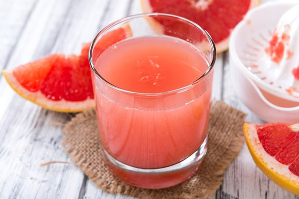

Thay vì uống những cốc nước ép bưởi ở bên ngoài giá khá “chát”, bạn tự làm một ly nước ép bưởi ngon đúng điệu tại nhà thì sao? Hãy cùng xem ngay cách làm nước ép bưởi không bị đắng và cách uống nước ép bưởi để giảm cân ngay nhé!
Bưởi: 1 quả
Nước đường cát: 100ml
Nước cốt chanh tươi: 10ml
Hoa atiso đỏ
Đá viên
Sơ chế bưởi
Trước tiên, bạn bóc vỏ bưởi và tách từng múi bưởi để riêng, bỏ hột bưởi. Sau đó cho bưởi ngâm vào nước đường cát để tạo vị ngọt tự nhiên, giữ màu của bưởi đẹp hơn khi làm nước ép. Lưu ý: lượng đường ngâm sẽ không ảnh hưởng đến độ ngọt của nước ép bưởi.
Cách làm nước ép bưởi màu đẹp, không bị đắng
Bước tiếp theo, bạn ngâm hoa atiso đỏ trong nước sôi 90 độ C, sau đó lấy nước cốt để riêng. Cho bưởi vào máy ép trái cây, ép lấy nước bưởi nguyên chất.
Pha chế nước ép bưởi
Bạn cho 80ml nước ép bưởi, 10ml nước đường, 5ml nước ngâm hoa atiso đỏ, 10ml nước chanh tười và đá viên vào shaker. Lắc đều hỗn hợp này. Khi bạn sử dụng bình lắc làm nước ép sẽ giúp cho nước ép lên màu đẹp mắt, hương vị sẽ giữ lại lâu hơn. Cuối cùng, rót ra ly và trang trí thêm một ít tép bưởi tươi.
Ngoài ra, bạn có thể kết hợp bưởi với một số loại trái cây, rau củ quả khác như: nước ép bưởi, dâu tây, gừng hay nước ép bưởi dứa, lá bạc hà và nước ép bưởi, quýt, cà rốt cũng là gợi ý vô cùng tuyệt vời cho các bạn tham khảo. Khi kết hợp nhiều loại trái cây lại với nhau, nhiều vitamin và khoáng chất sẽ bổ sung nhiều cho cơ thể. Hơn nữa, hương vị đổi mới thường xuyên sẽ làm bạn thích thú có thói quen uống nước ép mỗi ngày hơn là trà sữa đấy!
